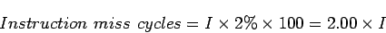
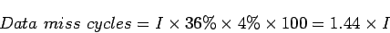
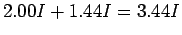
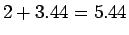
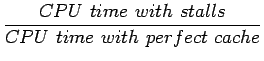
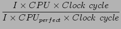
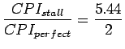
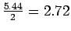

สมมุติให้ Instruction Cache Miss Rate สำหรับโปรแกรมหนึ่งๆ เท่ากับ 2% และ Data Cache Miss Rate เท่ากับ 4% ถ้าโปรเซสเซอร์มี CPI เท่ากับ 2 โดยไม่เกิดการ Stall ของหน่วยความจำ และเมื่อเกิด Miss จะมี Miss Penalty เท่ากับ 100 วงรอบการทำงาน จงหาว่าโปรเซสเซอร์ทำงานเร็วขึ้นเป็นกี่เท่าเมื่อไม่เกิดการ Miss เลย โดยใช้ความถี่ของคำสั่งจาก SPECint2000
จากจำนวนของวงรอบการทำงานที่เกิด Miss ในตัวแปรของจำนวนคำสั่ง I จะสามารถได้ว่า
|  | (7.17) |
ในการวัดปริมาณคำสั่งแบบต่างๆ ใน SPECint2000 เกิดการ loads และ stores เท่ากับ 36% ดังนั้นเราสามารถคำนวณวงรอบที่เกิดการ Miss จากการเรียกใช้หน่วยความจำเท่ากับ
|  | (7.18) |
ดังนั้นจำนวนของ Memory Stall Cycle ทั้งหมดเท่ากับ  ซึ่ง CPI เมื่อเกิด Memory Stall เท่ากับ  อัตราส่วนของ CPI เท่ากับ
|  |  | (7.19) | |
|  | (7.20) |
ประสิทธิภาพของระบบแบบ Perfect Cache มีค่าสูงกว่าเท่ากับ 